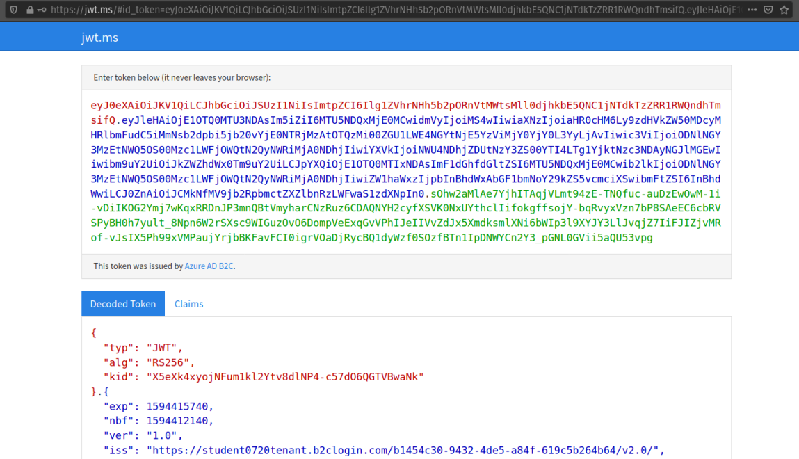

In this walkthrough we will begin by exploring OAuth using a visual learning tool. Afterwards we will introduce the OIDC specification (spec) which is built as a layer over the OAuth spec.
Both of these specs are designed for a user to securely coordinate the exchange of their information between two unrelated services:
Because OIDC is built over OAuth their distinction from each other is subtle but important to understand. Throughout this walkthrough keep in mind the purpose of each of these coordination mechanisms:
OAuth is a mechanism for a user to securely share access to their data that exists on one service with another service.
For example, when you are registering for a Spotify account you can choose to create it using your Facebook account. First you authenticate with Facebook. Then you grant access Spotify for it to access your Facebook profile data (like your name or photo). Spotify can then use this profile data to customize your experience in their service without requiring you to provide it all manually.
OAuth can also be used to grant management access of your data between services. If you allow Spotify to manage your Facebook data it can automatically post the music you are listening to on your behalf.
Note
The key aspect of OAuth is that the user never shares their credentials with the client service. Instead the provider (Facebook) provides a token that authorizes Spotify to access the requested data.
The first step of this walkthrough will be to use a tool called Visual OAuth. This tool will introduce you to the key terminology and concepts involved in OAuth. After learning the fundamentals it will guide you step-by-step through the OAuth mechanism. In this application:
Note
Visual OAuth is a client service made up of a distinct front-end (written in React) and back-end API. This is a standard approach in modern web development. Keep in mind that when referring to the client it can mean either the front-end client or the back-end API.
You will run this project locally on your machine. The Visual OAuth repo has all of the instructions for setting up and using the tool in its README file.
Follow the repo link and the instructions then return to this article when you have finished.
Warning
Make sure to use the Windows instructions in the README.md if you are running Windows.
From the Visual OAuth article we learned about the OAuth authorization code grant flow. This grant flow results in an access token which authorized the Client API to access the user’s protected GitHub API data.
An OAuth grant type, or grant flow, is the general term for the process of a client obtaining an access token via OAuth
In this section we will be learning about a new OAuth grant flow called the Implicit Grant Flow.
Let’s consider the steps of the OAuth authorization code grant flow presented in the Visual OAuth walkthrough:
This grant flow is the preferred OAuth grant flow for Client applications that have a dedicated back-end that can securely manage the client secret used in the final exchange. However, for desktop applications (like Postman) or those with only a front-end we can use the simpler implicit grant flow.
The implicit grant flow is suitable for Client applications that can not securely store the client secret. Recall that this secret is needed in the 4th step of the authorization code grant flow. Typically this scenario is encountered in Client applications that only consist of a front-end.
In the implicit grant flow there are only two steps:
Note
You can learn more about the OAuth Implicit Grant Flow by exploring:
In this course we will use the implicit flow in AADB2C to get access tokens and identity tokens which are used for authentication. In AADB2C both of these tokens are provided in a standard format called a JSON Web Token (JWT).
In OAuth there are two types of tokens:
A JSON Web Token (JWT) is a way of securely transferring a payload of data that can be validated for authenticity. A JWT is made up of 3 components:
The JSON data is signed for authenticity by the trusted authority (the provider) and Base64 encoded to make even large payloads easy to transport over HTTP.
Note
To learn more about JWTs start with the jwt.io introduction.
In the upcoming walkthroughs we will use a Microsoft JWT decoder tool to inspect both the identity and access tokens we receive from our own AADB2C service. To get an idea of what a JWT looks like the image below shows a decoded identity token:
Each of the components of the JWT are color-coded:
Note
Notice how the identity token is provided in the URL as a query string called id_token. Recall that the implicit grant flow returns tokens in the URL rather than a response body.
Claims are entries in the payload that describe information about the delegated authorization or identity of a user. At minimum, they include information that can be used to verify the token’s authenticity. In addition to the authenticity claims a token can contain:
Because the JWT is signed by a trusted authority the claims within it can be inherently trusted. This means that client services and resource servers do not need to make additional requests to the authority to confirm their validity.
We will explore both types of tokens and the different claims associated with each of them in the upcoming walkthroughs.
Note
This Microsoft article has a more detailed breakdown of how claims are used in Azure.
In OAuth each flow results in an access token. However, this token contains claims used for authorization not authentication. If our application wants to gain identity information to authenticate a user they will need to use another protocol.
The OIDC protocol is a variant of OAuth that can be used to gain an identity token instead.
OIDC is an authentication protocol used for securely signing in (authenticating) users across multiple web applications using a single identity.
OIDC is a more recent protocol built as a thin layer over OAuth. Whereas OAuth is about delegating access using access tokens (authorization), OIDC provides a mechanism for the secure exchange of a user’s identity using an identity token (authentication).
OIDC allows a user to use a single identity to sign in to any application or service on the web that supports the protocol.
Note
For a deeper look into how Azure AD B2C uses OIDC take a look at this article
OIDC standardizes the process of using OAuth for authenticating users. In practical terms, OAuth flows are still used but with an additional scope (openid) that results in an identity token. If the openid scope is requested in addition to authorization scopes both an identity and access token are returned.
As part of its effort to standardize the authentication process through OAuth, OIDC establishes a consistent pattern of endpoints that simplify how it is used. When integrating a web application using OIDC this standardized approach makes setting up these secure authentication and authorization mechanisms more consistent.
Note
Before OIDC, developers used pseudo-authentication with OAuth. Given that OAuth is an authorization protocol, this was considered a “hacky” approach.
Rather than each provider defining their own arbitrary “user profile” endpoint and response body, OIDC establishes a standard identity endpoint and secure mechanism for a Client to access this information.
Now that you have learned these two fundamental web protocols we will turn our attention to implementing them using AADB2C. In the following article we will explore the core aspects of an AADB2C service and how both OIDC and OAuth are used to securely manage interactions between Postman, the Coding Events API and our own user accounts.
Tip
Recall how we used GitHub as the provider service in the Visual OAuth. The purpose of this chapter is to set up our own provider service using AADB2C.
AADB2C is a complex service due to how it supports both authentication and authorization. This can be confusing without understanding that its role changes based on how it is used.
Depending on the context of how AADB2C is used it may behave as an:
Although we will learn how to set up AADB2C as an identity provider we will only use the identity token for inspecting its claims. Our main goal will be to protect our Coding Events API using access tokens. In order for a Client (like Postman) to make requests to the API they will need to register themselves with our AADB2C service.